星载 SAR 超高分辨率成像处理技术
建立快速成像尺度、图像质量和任务时限之间的约束关系；在斜视、宽场景和强散射条件下给出可解释的处理边界，使成像配置不再依赖单次经验调参。
围绕星载与机载 SAR 任务链路，形成从高分辨成像、运动目标检测到复杂电磁环境干扰识别、抑制与图像重构的成套技术能力。
建立快速成像尺度、图像质量和任务时限之间的约束关系；在斜视、宽场景和强散射条件下给出可解释的处理边界，使成像配置不再依赖单次经验调参。
建立 TOPS 模式原始回波从方位谱展开、精确聚焦到 burst 合并和多测绘带拼接的完整处理链，形成自主可控的大幅宽成像能力。
把通道间运动敏感差异转化为目标可信判别依据；将疑似目标发现、场景标注、局部复核和批量归档纳入同一处理链路。
突破已成像 SAR 产品只用于静态判读的使用边界，从图像异常响应中提取运动目标活动信息，并把增强、定位和状态提示转化为可展示效果图。
建立单通道高分辨星载 SAR 运动目标自动初筛路线，不依赖 ATI 或多通道干涉信息；把检测、定位、切片和结构化输出做成可复核流程。
利用双极化差异实现强干扰定向抑制，在压制污染的同时保持地物边界、细节结构和幅度关系，适配多类型真实干扰场景。
提出以子带对比度和子带熵刻画 SAR 图像干扰起伏特征的检测路线，将子带域能量差异转化为可解释判据，并支持恒虚警控制下的自动标注。
以图像块最大特征值作为干扰主导成分判据，建立自适应恒虚警检测机制，使强弱干扰均可在统一质检口径下被标注和复核。
以分块子空间结构刻画 SAR 图像中的多类型干扰，实现图像域统一估计、分离和去除。
把 SAR 回波字典建模与干扰低秩分离结合，以低成本算子替代庞大二维字典，在抑制窄带干扰时保持真实散射结构。
在分块子空间滤波中引入强散射像素保护和质量指标约束，使干扰去除过程兼顾干扰压制、目标亮点保持和结构连续性。
以二维谱分析驱动 LFM 扫频干扰谱聚焦、参数估计和解耦分离，在已成像 SAR 图像上完成污染识别、选择性压制与影像恢复。
将复合扫频干扰表示为多分量组合，通过稀疏参数化估计获得关键调制特征，并驱动后续谱聚焦与选择性去除。
形成适用性广、稳健性强的空频域干扰抑制能力，可覆盖多类 SAR 数据和多种污染形态，在压制干扰的同时保持主要地物结构和图像判读条件。
建立多维 SAR 数据一致性约束，在多通道或多子视响应中提取稳定权重，实现斑点噪声压制、相干结构保持和弱散射细节保护的统一处理。
将子带响应、色相编码、幅度明度映射和弱散射饱和度约束结合，形成适合高分辨 SAR 结构判读和成果展示的彩色可视化增强路线。
该成果面向星载 SAR 高分辨、宽幅面、大斜视和快速重访任务中的成像处理需求，解决高保真成像与快速出图之间的核心矛盾。星载平台在复杂几何、强散射城区、长条带观测和多批次生产中，既要求道路、建筑边界、线状结构和强点目标保持清晰，又要求处理链路能够进入任务时限。传统精确成像路线几何保持能力强，但计算压力大、参数配置依赖经验；单纯追求速度的处理方式又容易牺牲目标响应、局部纹理和辐射稳定性。该成果围绕这一矛盾建立质量约束和配置评估机制，把成像精度、处理效率、场景适应性和图像判读质量放在同一技术口径下进行控制。
技术路线以时域高保真成像思想为基础，面向工程处理引入可解释的尺度控制、质量判据和参数边界。处理结果能够同时给出全景成像、局部细节和不同配置下的质量变化，形成可复核的成像质量评估链条。真实数据处理结果显示，推荐配置下场景结构连续、强散射目标响应紧凑、局部纹理具备判读价值；当处理配置越过合理范围时，图像质量退化能够被识别并归因，避免把快速成像做成不可复核的经验调参。该成果把星载 SAR 大场景成像转化为边界清楚、结果稳定、能够批量交付的图像产品生产方式。
在任务使用中，该成果可作为星载 SAR 地面处理链的快速聚焦模块，也可作为新体制平台算法验证和应用展示的图像证据。军用方向可面向战场侦察监视、边海防巡查、机场港口常态监测、高价值区域快速重访和遥感情报底图生产，在有限时间内给出可判读的成像结果。民用方向可用于城市精细测绘、重大基础设施巡检、灾害应急评估、港口航运监管、自然资源调查和商业遥感产品生产。交付能力包括全景成像图、局部质量观察图、配置评估材料、快速聚焦模块和原型处理流程，便于接入国产化处理软件和批处理生产环境。
建立快速成像尺度、图像质量和任务时限之间的约束关系；在斜视、宽场景和强散射条件下给出可解释的处理边界，使成像配置不再依赖单次经验调参。
用于战场侦察监视、边境与海域态势感知、机场港口常态监测、高价值区域快速重访成像和遥感情报底图生产，为目标判读和变化分析提供清晰底图。
用于城市精细测绘、重大基础设施巡检、灾害应急评估、港口航运监管、自然资源调查和商业遥感产品生产，适配高质量 SAR 图像快速生产链路。
交付全景成像结果、局部质量观察图、配置评估材料、快速聚焦模块和原型处理流程，可接入批处理部署、国产化处理软件和定制化遥感产品生产环境。
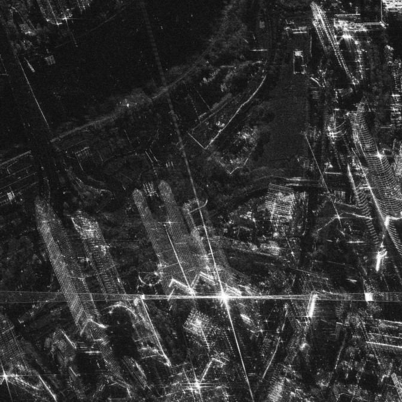
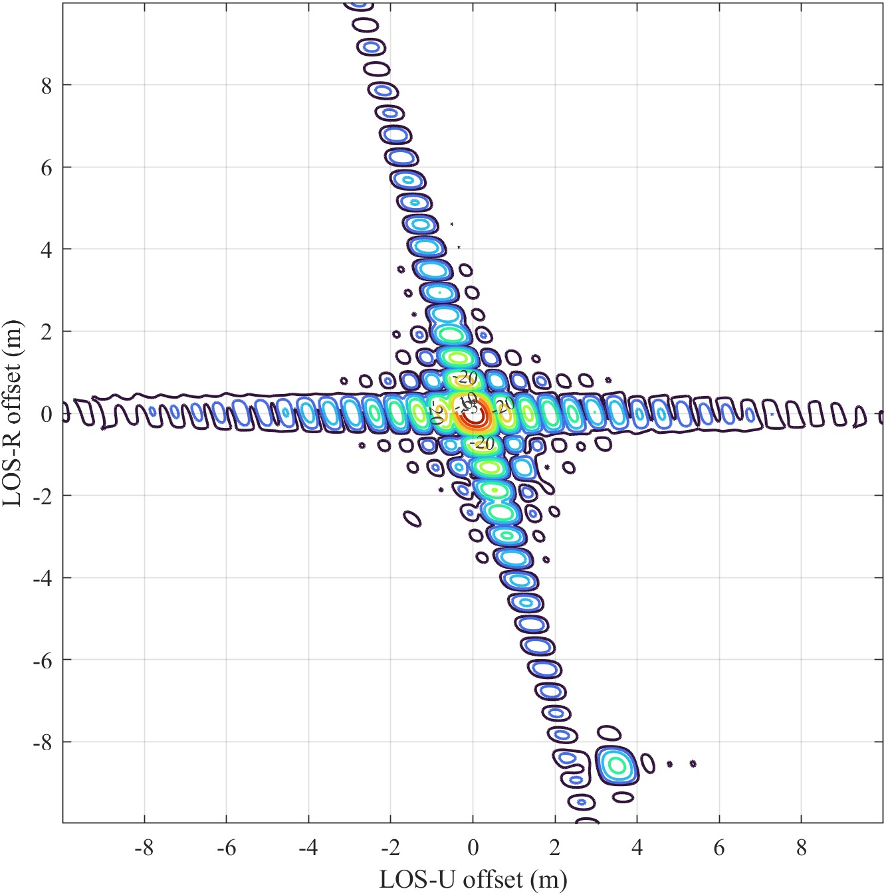
该成果面向 Sentinel-1 IW 等多测绘带 TOPS 模式原始回波聚焦处理，解决宽幅扫描、多 burst 拼接、方位频谱展开和测绘带合并带来的成像链路复杂问题。TOPS 模式通过天线波束快速摆扫获得宽幅覆盖，但原始数据在方位向存在明显的谱折叠、burst 边界和测绘带差异，不能按普通条带 SAR 方式直接聚焦。若处理链路不完整，图像会出现拼接断裂、方位模糊、亮暗不均和几何错位，影响海岸线、岛屿、城市纹理和海面目标的判读。该技术围绕 IW1/IW2/IW3 等测绘带建立独立参数控制和统一合并流程，使 TOPS 原始数据能够形成连续、可判读的大幅面 SAR 图像。
处理链路覆盖直流分量处理、方位谱展开与上采样、WKA/ECS 聚焦、方位空间展开、burst 合并和多测绘带全景拼接。处理结果能够形成分测绘带聚焦图、全景拼接图和典型区域结构细节，不同测绘带覆盖区域可拼接为完整场景，海岸线、岛屿边界、海陆分界和大范围纹理具备连续判读条件。该成果体现了从原始数据到成像产品的完整处理能力，为自主数据处理、算法验证、原始数据抢救和国产化处理链建设提供基础支撑。
军用场景可用于宽幅海域侦察、岛礁与海岸带持续监视、舰船活动区域底图生产、重点区域快速成像、外部原始数据自主处理和星载 SAR 载荷验证。民用场景可用于海洋环境监测、灾害应急制图、海岸带资源调查、港口航运监管、地表覆盖更新和商业 SAR 数据加工。交付能力包括 IW 分测绘带成像图、全景拼接图、TOPS 原始数据聚焦流程、burst 合并模块、批处理脚本和质量复核材料，可作为星载 SAR 地面处理链的核心成像单元。
建立 TOPS 模式原始回波从方位谱展开、精确聚焦到 burst 合并和多测绘带拼接的完整处理链，形成自主可控的大幅宽成像能力。
用于宽幅海域侦察、岛礁与海岸带监视、舰船活动区域底图生产、重点区域快速成像、外部原始数据处理和载荷验证。
可用于海洋环境监测、灾害应急制图、海岸带资源调查、港口航运监管、地表覆盖更新和商业 SAR 数据加工。
交付 IW 分测绘带成像图、全景拼接图、TOPS 原始数据聚焦流程、burst 合并模块、批处理脚本和质量复核材料。
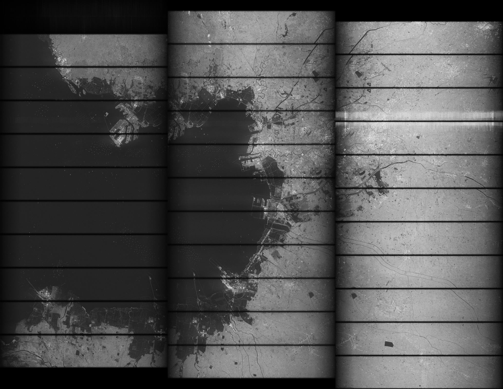
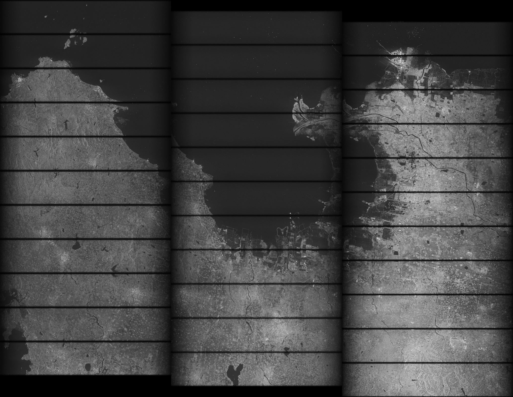
该成果面向星载、机载多通道 SAR 数据中的运动目标发现、定位、复核和成果归档需求，聚焦 GMTI-ATI 条件下的自动化检测。多通道 SAR 对运动目标具有天然敏感性，但在大幅宽观测、复杂地物背景和多批次任务中，单靠亮点筛查或人工逐景判读难以稳定交付。系统以通道间运动敏感差异和干涉响应特征为基础，将疑似运动目标发现、场景级标注、局部目标框选、批量结果整理和复核材料生成串成一条任务链路，使检测结果能够直接进入判读、核查和归档。
该成果把多通道观测优势转化为可追溯、可复核、可归档的检测产品。系统在真实任务数据中输出疑似目标位置、场景检测标注图、局部切片和可归档清单；面对机场、港口、道路节点和边海防区域，可先给出整体目标分布，再提供局部框选图供判读人员快速确认。批量任务中，结果可按区域、批次和候选目标汇总，便于人工复核、外场核查和多源情报比对。
军用方向可用于战场区域监视、边海防巡查、机场港口警戒、交通要道活动监测和重点目标动态线索提取，服务广域侦察、目标复核和态势更新。民用方向可用于海事监管、灾害应急、交通运行感知、港区作业监控、低空和地面异常活动提示，以及商业遥感数据增值服务。交付能力包括场景检测标注图、局部目标框选图、批量汇总结果、可归档检测清单和前端检测模块，可接入判读平台、任务管理系统或多源态势界面。
把通道间运动敏感差异转化为目标可信判别依据；将疑似目标发现、场景标注、局部复核和批量归档纳入同一处理链路。
用于战场区域监视、边海防巡查、机场港口警戒、交通要道活动监测和重点目标动态线索提取，服务广域侦察、目标复核和态势更新。
可用于海事监管、灾害应急、交通运行感知、港区作业监控、低空和地面活动异常提示，以及遥感数据增值服务中的动态线索发现。
交付场景检测标注图、局部目标框选图、批量汇总结果和可归档检测清单；可作为判读平台、任务管理系统或多源态势界面的前端检测模块。
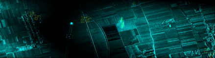
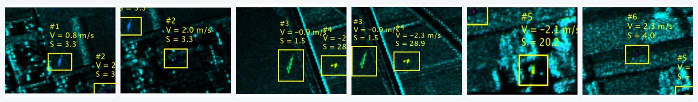
该成果聚焦星载高分辨 SAR 图像中的非合作运动目标感知与成像增强。运动目标在常规成像产品中往往表现为拖影、散焦、位置偏移和形态退化，判读人员能够看到异常，却难以快速判断目标位置、运动状态和任务价值。实际任务中，业务链路常以已成像 SAR 产品作为输入，难以回到原始回波重新设计完整成像流程。该成果以已成像图像为入口，从异常响应中提取运动目标线索，再对目标局部进行增强、定位和状态提示，把原本模糊分散的图像现象转化为可判读的活动信息。
现有处理结果表明，该成果能够使滑行飞机等慢速目标轮廓更加清晰，使高速运动目标拖影收敛，并给出符合场景运行规律的状态提示。该成果将运动引起的模糊、拖影和偏移转化为目标活动信息，通过处理前后效果图、目标标注和状态提示形成可复核结果。该方式不要求重新获取回波数据，也不改变现有 SAR 产品供应链，适合高时效研判和专题产品生产。
军用方向可用于天基侦察监视、机场跑道与停机坪活动监控、港口码头与近岸目标巡察、纵深道路与交通节点动目标发现，以及战场态势更新中的机动目标线索提取。民用方向可服务民航机场运行态势评估、海事监管、交通应急、灾害救援、重点基础设施安全巡查和商业遥感增值服务。交付能力包括位置标注图、目标增强图、状态判断图和可留痕说明材料，可部署在判读前处理与专题产品生产之间，作为人工复核前的高价值处理环节。
突破已成像 SAR 产品只用于静态判读的使用边界，从图像异常响应中提取运动目标活动信息，并把增强、定位和状态提示转化为可展示效果图。
用于天基侦察监视、机场跑道与停机坪活动监控、港口码头与近岸目标巡察、纵深道路与交通节点动目标发现，以及战场态势更新中的机动目标线索提取。
可服务民航机场运行态势评估、海事监管、交通应急、灾害救援、重点基础设施安全巡查和商业遥感增值服务，适合作为人工复核前的高价值预处理环节。
交付位置标注图、目标增强图、状态判断图和结果留痕材料；可作为轻量处理单元接入判读平台、任务管理系统或多源态势界面。
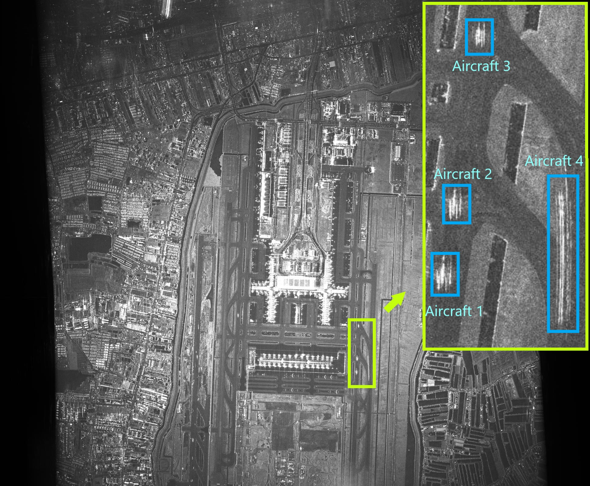
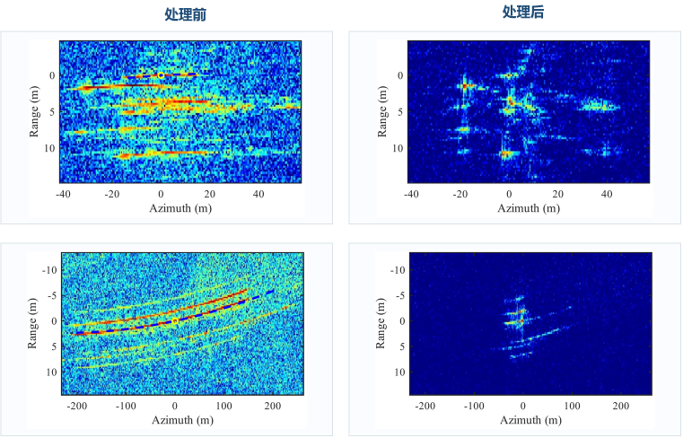
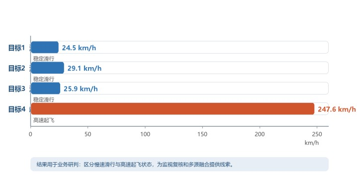
该成果面向高分辨率单通道星载 SAR 图像中的运动目标检测与可视化输出。在单通道数据条件下，GMTI-ATI 等多通道手段无法直接使用，人工逐景浏览又难以覆盖大幅面复杂场景。实际应用需要解决三个问题：图像中是否存在疑似运动目标，目标大致位于何处，后续如何快速复核。该成果围绕这一任务链条，建立面向单幅高分辨 SAR 影像的自动初筛流程，从复杂背景中提取疑似运动目标线索，并生成目标叠加图、候选切片和结构化结果文件。
该成果面向单通道条件下的自动初筛和可视化复核，重点服务无多通道干涉观测条件下的运动目标线索发现。面对强散射背景、大范围场景和弱运动线索，方法将异常响应转化为可浏览、可复核、可继续分析的结果产品。叠加图用于掌握目标空间分布，候选切片用于逐目标核验，结构化表格用于排序、筛选和平台入库。该路线与 GMTI-ATI 系统形成互补：单通道方法面向存量影像和常规成像产品，多通道系统面向具备通道观测条件的任务，两者覆盖不同数据约束下的运动目标应用。
军用方向可用于重点港口、机场、道路节点、海岸线、岛礁周边和边境通道等区域活动线索发现，服务广域态势感知、异常活动提示、目标复核和任务后评估。民用方向可用于港航监管、重点道路运行监测、海岸带活动监测、应急救援态势掌握、灾后交通恢复评估和重点园区巡查。交付能力包括检测叠加图、候选目标切片、结构化表格和批处理接口，使大幅面 SAR 影像从人工浏览转入自动初筛加人工确认流程。
建立单通道高分辨星载 SAR 运动目标自动初筛路线，不依赖 ATI 或多通道干涉信息；把检测、定位、切片和结构化输出做成可复核流程。
用于重点港口、机场、道路节点、海岸线、岛礁周边和边境通道等区域活动线索发现，服务广域态势感知、异常活动提示、目标复核和任务后评估。
可服务港航监管、重点道路运行监测、海岸带活动监测、应急救援态势掌握、灾后交通恢复评估和重点园区巡查。
交付检测叠加图、候选目标切片、结构化表格和批处理接口，可用于专题产品扩展和平台入库。
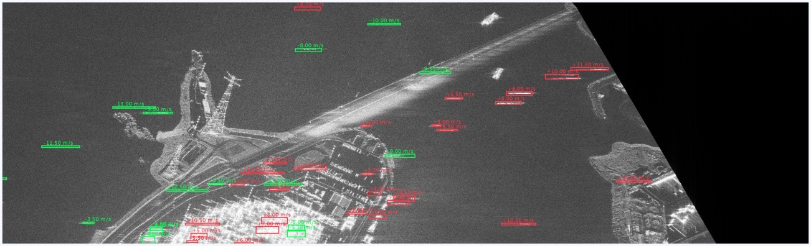
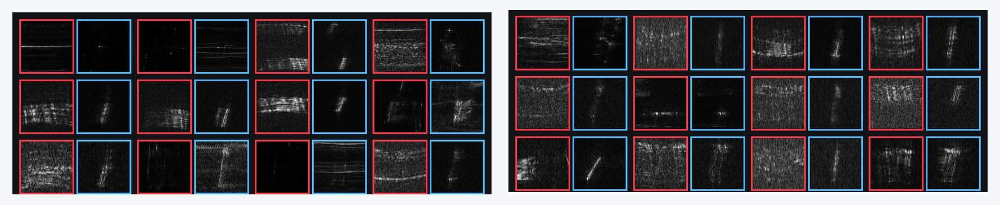
该成果面向复杂电磁环境下的星载 SAR 成像质量保障，聚焦双极化 SAR 图像中的强亮带、宽带噪声、突发斑块和转发式干扰等污染问题。强干扰会破坏辐射一致性、纹理连续性和目标可判读性，并把影响传导到目标识别、变化检测、标注生产和专题解译环节。传统频域剔除、单通道滤波或强平滑处理容易以损伤真实纹理换取表面洁净。该成果利用双极化观测中外部干扰与自然地物散射表现的差异，对污染区域定向压制，同时保持地物边界、细节结构和幅度关系。
双极化数据验证覆盖转发式干扰、脉冲突发干扰、连续宽带条带和宽带噪声等场景。处理后，污染区域得到压制，未受污染区域结构保持稳定，图像重新具备判读和产品生产价值。成果提供处理前后对比图、恢复影像和质量评估材料，适合放在双极化 SAR 数据预处理、质量修复和批量产品生产环节，针对历史数据、公开数据和复杂电磁区域观测数据开展治理。
军用方向可用于电磁对抗条件下的侦察图像保障、重点区域持续监视、受干扰影像恢复、海岸与岛礁判读、遥感情报产品质量控制。民用方向可用于商业遥感质量控制、灾害监测影像修复、海洋与陆地资源调查、复杂电磁区域基础设施巡检和卫星历史数据治理。交付能力包括处理前后对比图、干扰抑制结果影像、质量指标报告和质检增强模块，可嵌入 SAR 数据预处理和批量产品生产流程，降低干扰对后续业务的影响，并保留可复核的质量依据。
利用双极化差异实现强干扰定向抑制，在压制污染的同时保持地物边界、细节结构和幅度关系，适配多类型真实干扰场景。
用于电磁对抗条件下侦察图像保障、重点区域持续监视、受干扰影像恢复、海岸与岛礁判读、遥感情报产品质量控制。
可用于商业遥感质量控制、灾害监测影像修复、海洋与陆地资源调查、复杂电磁区域基础设施巡检和卫星历史数据治理。
交付处理前后对比图、干扰抑制结果影像、质量指标报告和质检增强模块；可嵌入 SAR 数据预处理与批量产品生产流程。
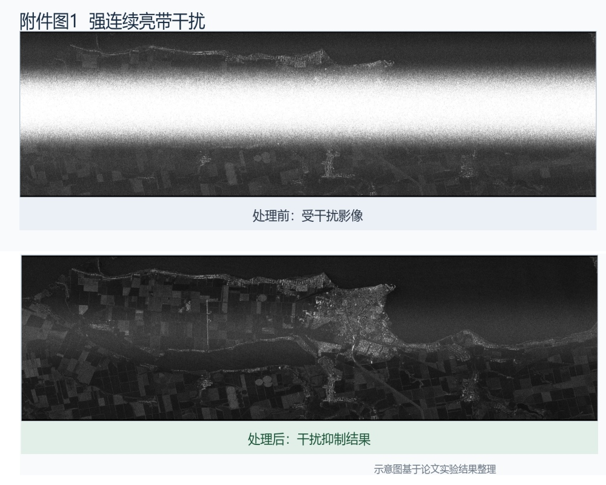
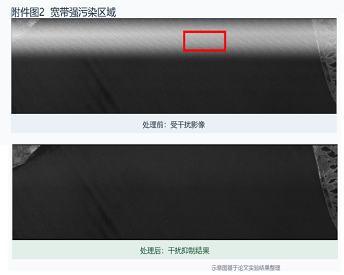
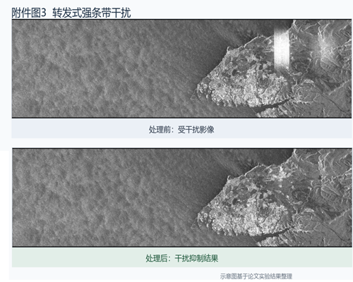
该成果面向单视复数 SAR 图像中的有源干扰识别与前置质检，重点解决干扰形态多变、强弱差异大、人工判读难以稳定覆盖的问题。星载 SAR 在频谱共用和电磁活动密集区域工作时，可能受到间歇采样转发干扰、线性调频脉冲、宽带噪声及其他无意电磁辐射污染。此类污染在幅度图上可能表现为亮带、斑块、条纹或局部异常，单靠灰度强弱判断容易与地物散射、成像旁瓣和噪声起伏混淆。该成果从 SAR 图像的子带响应入手，利用干扰像素在不同子带中的能量分布不均匀特征，构建子带对比度和子带熵两类可解释特征，将干扰由模糊的图像异常转化为可定位、可筛查、可复核的统计对象。
该成果形成子带特征图、检测标注图和处理前后对比结果。其创新点在于把干扰与非干扰像素在子带域的起伏差异用于稳定判别，并把恒虚警思想引入阈值控制，使检测结果能够适配不同场景和不同干扰强度。该方法可作为干扰抑制前的入口，也可作为批量 SAR 数据质检手段，对受污染影像进行自动分级、区域标注和复核材料生成。在只能获取 SAR 产品、无法回到原始回波链路的应用条件下，该技术提供了直接处理已成像产品的有效路径。
军用场景可用于战场电磁环境监测、受干扰侦察图像筛查、重点区域影像质量判别、干扰活动线索提示和抗干扰处理前置判定。民用场景可服务卫星数据质检、商业遥感产品筛选、灾害应急影像可用性判断、海陆资源调查前置清洗和历史影像治理。交付能力包括子带对比度图、子带熵图、干扰检测标注图、疑似干扰区域清单、质量筛查报告和可嵌入式检测模块，可接入批处理系统、遥感产品生产链和人工复核平台。
提出以子带对比度和子带熵刻画 SAR 图像干扰起伏特征的检测路线，将子带域能量差异转化为可解释判据，并支持恒虚警控制下的自动标注。
用于战场电磁环境监测、受干扰侦察图像筛查、重点区域影像质量判别、干扰活动线索提示和抗干扰处理前置判定。
可服务卫星数据质检、商业遥感产品筛选、灾害应急影像可用性判断、海陆资源调查前置清洗和历史影像治理。
交付子带特征图、检测标注图、疑似干扰区域清单、质量筛查报告和检测模块，可接入批处理质检系统和人工复核平台。
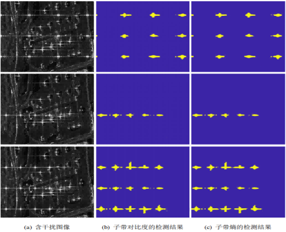
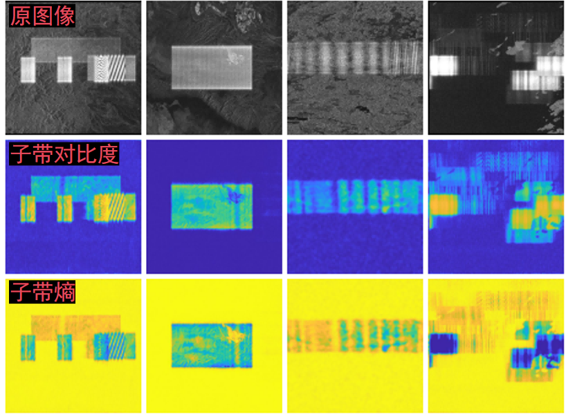
该成果面向 SAR 图像中的自适应干扰检测和批量质量控制，解决弱干扰不易发现、强干扰形态不固定、固定阈值跨场景失效的问题。干扰进入 SAR 图像后，往往会使图像块内部出现明显的主导成分，体现在协方差结构中就是最大特征值被抬升。该成果抓住这一结构变化，以图像块为基本处理单元，对干扰引起的主导特征进行检测，使判断依据从单像素灰度异常转向局部数据结构异常。相比仅依赖幅度、纹理或人工经验的筛查方式，该技术更适合处理大幅宽、多批次、不同平台来源的 SAR 影像。
该成果建立最大特征值驱动的自适应检测机制，并把恒虚警控制嵌入阈值确定过程。处理结果包括图像块检测结果、干扰区域标注、误警控制效果和处理前后复核图，能够在同一套口径下处理强干扰、弱干扰以及不同分辨率、不同采样方式带来的统计差异。它既可以作为独立质检工具，也可以作为后续干扰抑制算法的前端开关，避免对无干扰数据进行不必要处理。
军用场景可用于侦察影像入库前质检、受干扰区域快速标注、战场电磁活动异常提示、干扰压制处理任务分流和重点目标区影像可用性判断。民用场景可用于商业卫星数据生产、海量 SAR 影像归档、灾害应急图像筛选、海事监管数据质检和基础设施巡检影像可用性评估。交付能力包括干扰检测标注图、图像块级质量标签、批量质检清单、异常区域复核材料和前置检测软件模块，可与干扰抑制、产品发布和人工审核流程衔接。
以图像块最大特征值作为干扰主导成分判据，建立自适应恒虚警检测机制，使强弱干扰均可在统一质检口径下被标注和复核。
用于侦察影像入库前质检、受干扰区域快速标注、战场电磁活动异常提示、干扰压制任务分流和重点目标区影像可用性判断。
可用于商业卫星数据生产、海量 SAR 影像归档、灾害应急图像筛选、海事监管数据质检和基础设施巡检影像评估。
交付检测标注图、图像块级质量标签、批量质检清单、异常区域复核材料和前置检测软件模块。
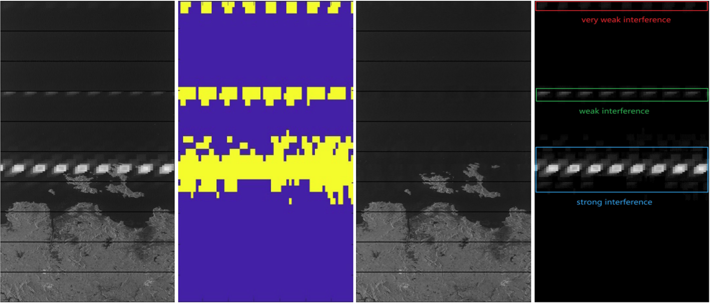
该成果面向 SAR 图像中的宽带、窄带、连续波和脉冲型干扰去除，解决多类型干扰共存情况下难以建立统一后处理方法的问题。星载 SAR 在 L、C、X 等频段工作时，会受到广播通信、地面雷达、导航和其他电子系统辐射影响，形成不同形态的电磁干扰伪影。许多干扰已经进入聚焦图像产品，难以取得原始回波重新预处理。该成果以图像域分块子空间滤波为核心口径，在 SAR 图像域直接估计并去除干扰成分。
技术创新体现在两个方面：一是以图像块为处理单元，适配大幅宽 SAR 数据的空间变化；二是把不同干扰形态统一到子空间分离口径下，避免针对每一种污染单独设计处理链。处理结果覆盖多平台、多干扰类型的处理前后对比、干扰分量图和局部细节保持效果。该技术特别适合批量处理 ERS、ENVISAT/ASAR、Sentinel-1、GF-3 等来源的受扰 SAR 数据，为后续图像判读、变化检测和相干处理提供可用输入。同时，处理结果能够保留干扰分量与恢复影像的对应关系，便于判读人员核查被扣除内容是否属于电磁污染，而不是场景内真实目标。
军用场景可用于受污染侦察图像修复、海岸与港口目标判读保障、战场电子活动区域影像恢复、批量任务数据筛选和重点目标复核。民用场景可用于商业 SAR 产品质量提升、海洋监测、灾害应急、国土资源调查、农业遥感和历史数据治理。交付能力包括分块处理流程、干扰去除结果图、干扰分量图、处理前后对比材料和可嵌入后处理软件模块，可作为 SAR 产品生产线的通用干扰去除单元。
以分块子空间结构刻画 SAR 图像中的多类型干扰，实现图像域统一估计、分离和去除。
用于受污染侦察图像修复、海岸与港口目标判读保障、战场电子活动区域影像恢复、批量任务数据筛选和重点目标复核。
可用于商业 SAR 产品质量提升、海洋监测、灾害应急、国土资源调查、农业遥感和历史数据治理。
交付分块处理流程、干扰去除结果图、干扰分量图、处理前后对比材料和可嵌入后处理软件模块。
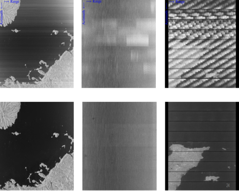
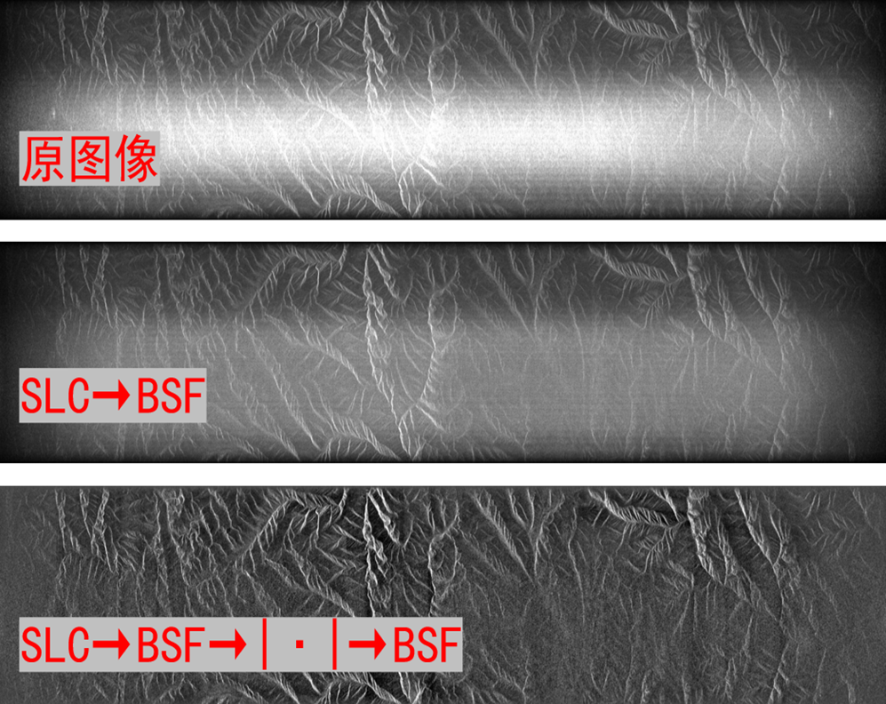
该成果面向典型 SAR 系统中的窄带干扰抑制，解决低秩干扰分离与真实雷达回波保持之间的矛盾。窄带电磁干扰常具有低秩或谱稀疏特性，但 SAR 回波并不是普通脉冲雷达中的简单稀疏序列。由于 SAR 使用较长脉冲和合成孔径积累，点散射体在距离和方位上都具有扩展响应，直接套用普通稀疏模型容易造成回波表示失真；构造完整二维字典又会带来很高的存储和计算负担。该成果围绕 SAR 成像机理建立低成本字典算子，把有用回波的稀疏表示与干扰低秩特性结合起来。
技术创新在于用与 SAR 成像过程相一致的字典分析和合成算子替代庞大的显式二维字典，并在稳健 PCA 分离口径下区分有用回波和干扰成分。处理结果包括受扰图像、恢复图像、局部细节和对比指标。该技术适合在需要保持散射结构的窄带干扰场景中使用，尤其适合对图像质量和后续解释可靠性要求较高的任务。处理过程强调在 SAR 回波模型约束下保留真实散射信息。这一边界对强散射稀疏场景尤为关键，可降低把目标回波误分解为干扰分量的风险，并为后续算法比测提供统一输入。
军用场景可用于重点区域窄带电磁干扰下的 SAR 数据恢复、强散射目标保护、侦察图像质量保障、干扰压制算法验证和遥感情报产品复核。民用场景可用于通信或广播污染频段下的卫星影像修复、基础设施巡检、资源调查、灾害应急和历史数据再处理。交付能力包括窄带干扰分离结果、恢复影像、局部对比切片、质量评估材料和算法验证模块，可服务科研验证、软件集成和受扰数据治理。
把 SAR 回波字典建模与干扰低秩分离结合，以低成本算子替代庞大二维字典，在抑制窄带干扰时保持真实散射结构。
用于重点区域窄带电磁干扰下的数据恢复、强散射目标保护、侦察图像质量保障、干扰压制算法验证和情报产品复核。
可用于通信或广播污染频段下的卫星影像修复、基础设施巡检、资源调查、灾害应急和历史数据再处理。
交付窄带干扰分离结果、恢复影像、局部对比切片、质量评估材料和算法验证模块。
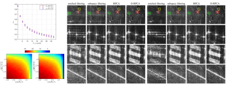
该成果面向港口、城区、桥梁、舰船和大型设施等异质 SAR 场景中的干扰去除，解决常规分块子空间滤波在强点目标附近易削弱真实散射、产生黑线或结构断裂的问题。真实业务图像往往不是均匀场景，强散射点和人造结构大量存在。如果把这些强散射响应误认为干扰成分，处理后会损伤目标亮点、边缘和局部纹理，甚至影响后续目标识别和变化检测。该成果在分块子空间滤波基础上引入强散射保护思想，先识别并屏蔽强散射像素，再估计干扰成分并回到原图中扣除。
技术创新在于把干扰估计与强散射保护分开处理，并利用图像对比度和熵等质量指标约束处理强度，使不同场景下的子空间选择更贴近图像恢复目标。成果结果体现常规处理与鲁棒处理的对比、强散射目标保持效果、黑线伪影抑制效果和局部细节恢复。该技术适合处理既有强干扰又有强目标的复杂 SAR 图像，可作为通用 BSF 方法的工程增强版本，在复杂场景中减少误伤。强散射保护前后的局部切片能够直接说明目标亮点、线状结构和背景纹理的保持情况，支撑成果展示与验收复核。
军用场景可用于港口舰船、机场设施、桥梁节点、岛礁目标和城区重点区域的受扰影像恢复，保障强散射目标判读和目标复核。民用场景可用于港口航运监管、城市基础设施巡检、桥梁道路监测、灾害损毁评估和商业卫星数据修复。交付能力包括鲁棒干扰去除结果图、强散射保护对比图、质量指标评估材料、处理前后局部切片和可嵌入式后处理模块，可部署在复杂场景 SAR 产品生产链中。
在分块子空间滤波中引入强散射像素保护和质量指标约束，使干扰去除过程兼顾干扰压制、目标亮点保持和结构连续性。
用于港口舰船、机场设施、桥梁节点、岛礁目标和城区重点区域的受扰影像恢复，保障强散射目标判读和目标复核。
可用于港口航运监管、城市基础设施巡检、桥梁道路监测、灾害损毁评估和商业卫星数据修复。
交付鲁棒干扰去除结果图、强散射保护对比图、质量指标评估材料、处理前后局部切片和后处理模块。
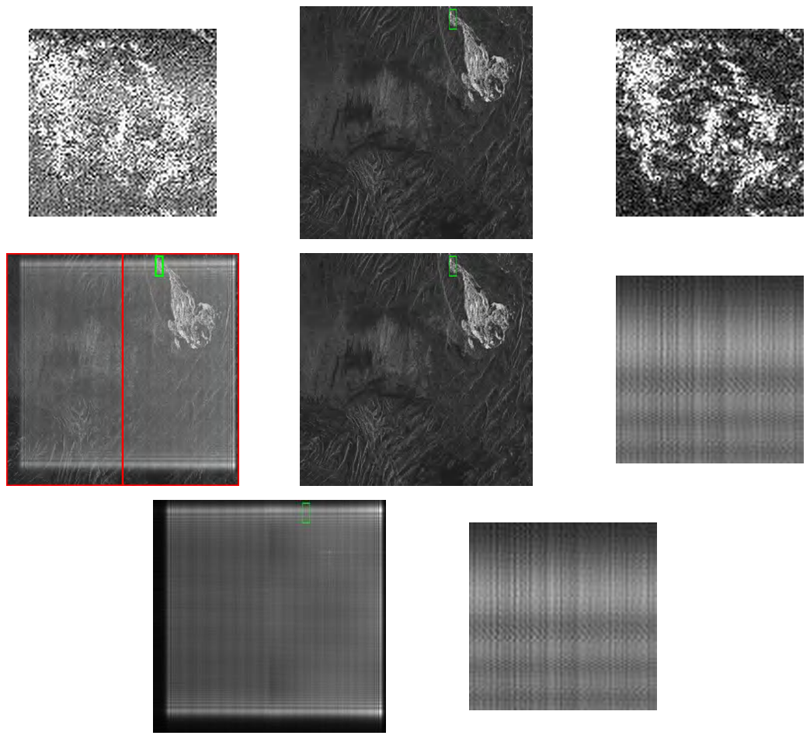
该成果面向已聚焦 SAR 图像中的 LFM 扫频类干扰谱分析、参数估计与解耦分离，解决无法回到 Level-0 原始回波链路时仍需开展干扰修复的问题。现实业务中，大量数据以 SAR 图像或幅度产品形式流转，传统预处理方法难以覆盖已归档、已分发或外部获取的 SAR 产品。LFM 干扰在图像中常形成亮带、扫频纹理和局部辐射伪影，直接滤除容易损伤地物散射和相位关系。该成果把问题转入二维谱分析与谱聚焦口径，使干扰在可控域内集中呈现，再开展选择性压制和影像恢复。
技术创新在于将二维谱分析、谱聚焦、参数估计和选择性分离纳入同一处理链路，在不重启完整成像流程的条件下对已成像 SAR 产品进行污染分离。处理结果包括含干扰图像、谱域聚焦结果、解耦分离结果、去除后影像和局部质量对比。该方法适合对干扰形态明确、任务时限紧、数据幅宽大的场景开展快速处理，可与图像域分块子空间滤波形成互补：前者强调谱域解释和解耦，后者强调局部结构自适应。
军用场景可用于受扫频雷达干扰的侦察图像快速恢复、机场港口和海岸岛礁影像抢救处理、重点目标区判读保障、战场电磁活动影响评估和遥感情报产品修复。民用场景可用于商业 SAR 数据快速修复、灾害应急影像保障、海事监管、基础设施巡检、历史受扰 SAR 产品再利用和遥感服务可信度评估。交付能力包括二维谱分析结果图、谱聚焦处理图、干扰去除前后对比图、恢复影像、局部复核切片和快速处理模块，可嵌入批量后处理、质检和产品生产流程。
以二维谱分析驱动 LFM 扫频干扰谱聚焦、参数估计和解耦分离，在已成像 SAR 图像上完成污染识别、选择性压制与影像恢复。
用于受扫频雷达干扰的侦察图像快速恢复、机场港口和海岸岛礁影像抢救处理、重点目标区判读保障和战场电磁活动影响评估。
可用于商业 SAR 数据快速修复、灾害应急影像保障、海事监管、基础设施巡检、历史受扰 SAR 产品再利用和遥感服务可信度评估。
交付二维谱分析结果图、谱聚焦处理图、干扰去除前后对比图、恢复影像、局部复核切片和快速处理模块。
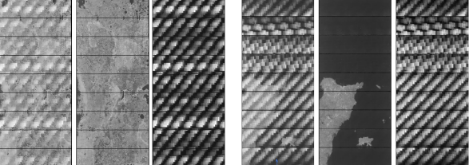
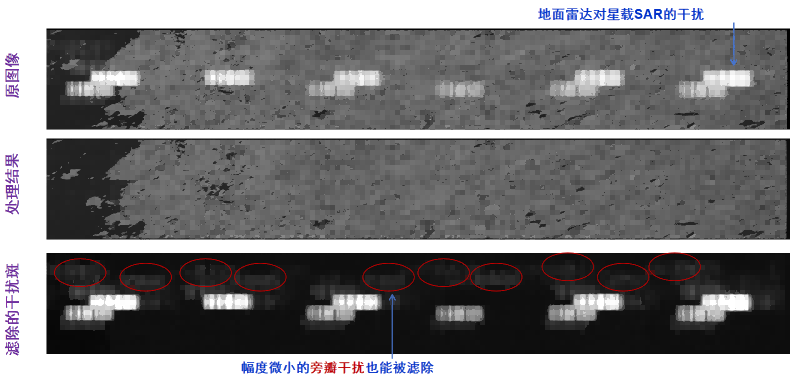
该成果面向 SAR 图像域复合扫频干扰的精细建模与去除，解决实际干扰并非单一调频分量、常规单模型方法难以完整表征的问题。真实空间电磁环境中，来自不同雷达或通信系统的干扰可能同时进入 SAR 图像，形成多个调频分量叠加的亮带、扫频纹理和复杂伪影。若仍按单一扫频结构处理，部分干扰会残留，部分真实散射也可能被误伤。该成果把复合干扰表示为多个扫频分量的组合，并用稀疏参数化方式估计方位和距离方向的调频特征，为后续谱聚焦和滤除提供更准确的输入。
技术创新在于把复合干扰从单分量假设扩展到多分量参数化表达，用离散化扫频字典描述候选结构，再在稀疏约束下选择有效分量。处理结果包括复合干扰图像、参数化估计支撑的谱聚焦结果、去除后影像和大幅宽处理对比。该技术适合处理多源干扰、强弱混合干扰和非理想扫频污染，可作为二维谱分析滤波的增强入口，使复杂干扰从不可解释的伪影转化为可分解的参数化对象。该表达方式还便于对不同干扰分量分别复核，降低强分量掩盖弱分量、局部残留影响整幅图像评价的风险。
军用场景可用于复杂电磁对抗环境下的受扰 SAR 图像恢复、多源干扰影响判读、重点目标区影像抢救处理和遥感情报产品质量保障。民用场景可用于商业 SAR 星座数据修复、海洋与陆地监测产品质检、灾害应急图像保障、历史数据治理和遥感服务可信度评估。交付能力包括复合干扰参数化估计结果、谱聚焦结果图、去除前后对比图、恢复影像、批处理脚本和软件模块接口，可支撑复杂干扰场景下的产品化处理。
将复合扫频干扰表示为多分量组合，通过稀疏参数化估计获得关键调制特征，并驱动后续谱聚焦与选择性去除。
用于复杂电磁对抗环境下的受扰 SAR 图像恢复、多源干扰影响判读、重点目标区影像抢救处理和情报产品质量保障。
可用于商业 SAR 星座数据修复、海洋与陆地监测产品质检、灾害应急图像保障、历史数据治理和遥感服务可信度评估。
交付复合干扰参数化估计结果、谱聚焦结果图、去除前后对比图、恢复影像、批处理脚本和软件模块接口。
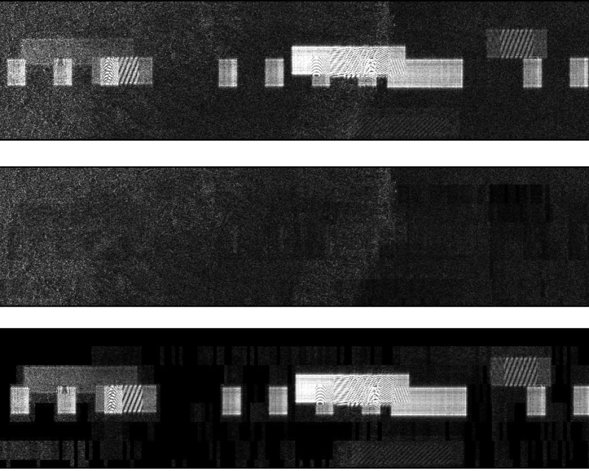
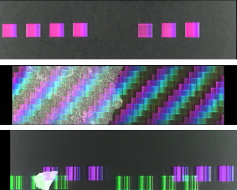
该成果面向星载 SAR 数据在复杂电磁环境下的图像质量保障需求，重点解决宽带条纹、局部亮带、强噪声污染和场景辐射不均等问题。实际任务中，受扰数据来源广、场景类型多、干扰强弱差异大，单一场景调参方式难以支撑批量交付。该技术以空频域联合处理形成跨平台、跨场景和跨干扰形态的稳定适配能力，重点体现处理结果的可判读性、结构保持能力和批量任务中的稳健输出能力。
现有结果覆盖海岸、岛屿、海面、陆地区域和 TOPS 聚焦图像等典型数据。处理后，贯穿图像的强条带和局部污染得到压制，海陆边界、岸线轮廓、岛屿纹理和背景结构保持连续，图像重新具备判读、质检和产品发布条件。该成果面向不同平台、不同分辨率、不同污染形态保持稳定抑制效果和较低场景依赖，处理前后对比、适用数据类型和成果形式能够支撑批量质检与产品化交付。
军用场景可用于电磁压制条件下的星载 SAR 侦察成像保障、海岸岛礁与港口区域受扰影像恢复、战场电磁活动影响评估、重点目标区快速出图和干扰压制效果复核。民用场景可服务商业 SAR 数据质检、海洋监测、灾害应急、港航监管、自然资源调查和历史受扰数据再处理。交付能力包括干扰抑制前后对比图、恢复影像、批量处理脚本、质量复核材料和软件模块接口，可作为 SAR 数据生产链中的稳定质量保障单元。
形成适用性广、稳健性强的空频域干扰抑制能力，可覆盖多类 SAR 数据和多种污染形态，在压制干扰的同时保持主要地物结构和图像判读条件。
用于受电磁压制影响的星载 SAR 成像保障、海岸岛礁与港口影像恢复、战场电磁活动评估、重点目标区快速出图和算法比测。
可服务商业 SAR 数据质检、海洋监测、灾害应急、港航监管、自然资源调查和历史受扰原始数据再处理。
交付干扰抑制前后对比图、恢复影像、批量处理脚本、质量复核材料和软件模块接口，可嵌入 SAR 数据生产与质检流程。
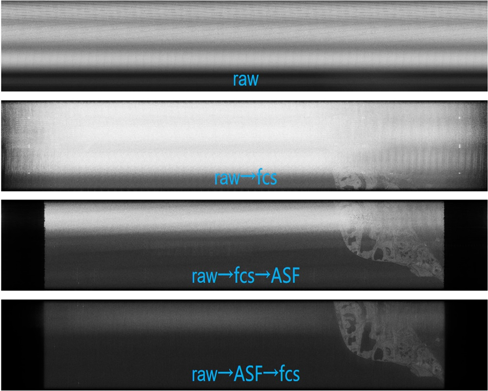
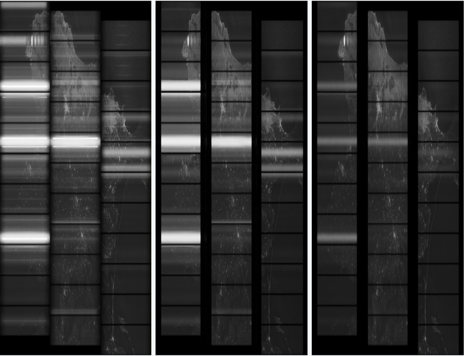
该成果针对高分辨 SAR 幅度图、干涉图、多视彩色显示图和受干扰图像中的斑点噪声、相干纹理退化与弱散射细节损失问题，建立多维数据一致约束下的稳健去相干斑滤波增强路线。SAR 图像不同于光学图像，斑点噪声与相干成像机理紧密相关，直接平滑会削弱点目标、道路边界、建筑轮廓和干涉相位结构；只在单幅图像上寻找相似块，又难以利用多通道、多子视、多极化或多维显示结果中已经存在的冗余信息。该技术以多维 SAR 数据为处理对象，在空间邻域和维度邻域中寻找稳定相似关系，把同一地物在不同维度中的一致响应转化为滤波权重，使噪声压制与结构保持在同一流程内完成。
处理前后幅度图、干涉彩色图和受噪声干扰场景的对比结果显示，均匀区域噪声颗粒得到压制，道路、建筑边缘和强散射点保持清晰，彩色干涉纹理连续性更好，受污染区域的可判读结构得到恢复。该方法支持多维 SAR 数据输入，可按 CPU/GPU 条件部署，并适合与彩色编码、相干滤波、图像增强和专题判读流程组合使用。其核心价值在于保持相干信息和弱目标线索，为后续检测、分类、干涉分析和成果展示提供更稳定的图像基础。
军用场景可用于重点区域 SAR 图像判读前增强、低信噪比侦察图像修复、机场港口设施识别、边海防区域精细观察、受干扰图像复核和多维 SAR 产品质量保障。民用场景可服务城市基础设施巡检、灾害应急解译、地表形变观察、矿区与港区监测、商业遥感产品美化和高分辨 SAR 图像发布。交付能力包括幅度图增强结果、干涉图增强结果、受污染场景恢复图、批处理脚本、GPU 加速滤波模块和可嵌入式图像增强接口，可接入既有 SAR 产品生产线。
建立多维 SAR 数据一致性约束，在多通道或多子视响应中提取稳定权重，实现斑点噪声压制、相干结构保持和弱散射细节保护的统一处理。
用于侦察影像判读前增强、低信噪比图像修复、机场港口设施识别、边海防精细观察、受干扰图像复核和多维 SAR 产品质控。
可用于城市基础设施巡检、灾害应急解译、地表形变观察、矿区与港区监测、商业遥感产品美化和高分辨 SAR 图像发布。
交付幅度图增强结果、干涉图增强结果、受污染场景恢复图、批处理脚本、GPU 加速滤波模块和可嵌入式图像增强接口。
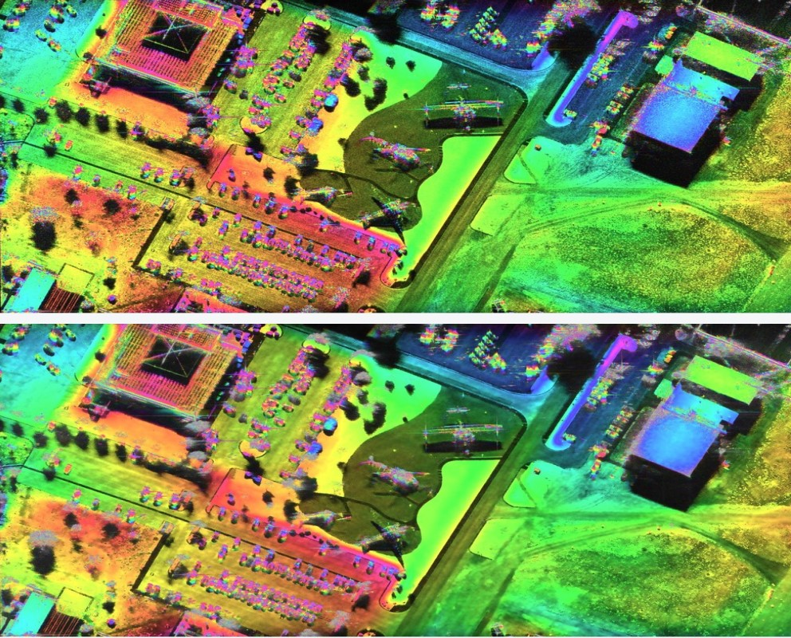
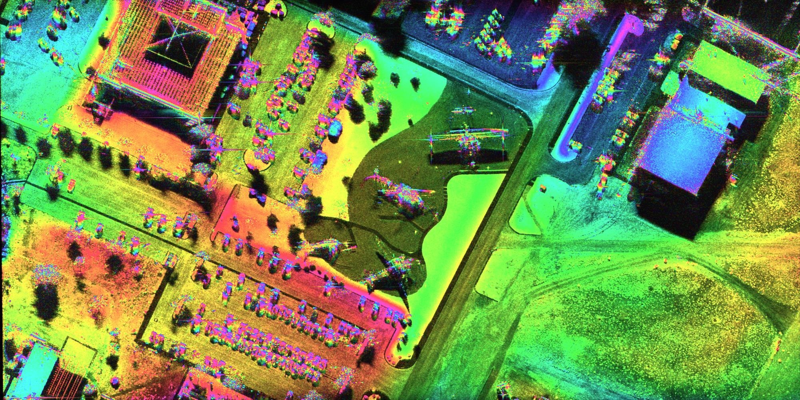
该成果面向高分辨率 SAR 图像成果展示、人工判读和复杂场景快速浏览需求，提出 SSCC（Chromatic Coding for High-resolution SAR Visualization）彩色可视化增强技术。传统 SAR 灰度图能够表达散射强度，却难以直观区分不同方向、不同子带和不同结构响应；常见彩色子视显示方法在强散射区域容易过曝，在弱散射背景中容易引入杂色，导致机场、城区、港口和道路场景的细节层次被压缩。SSCC 从子带能量分布、色相编码和幅度明度映射出发，把高分辨 SAR 图像中原本隐藏在谱域和子视差异中的结构信息转化为可观察的颜色差异，使强散射目标、线状结构、建筑轮廓和地物纹理更适合快速浏览。
技术实现上，SSCC 将 SAR 图像划分为多个子带，分别形成子带强度响应，再通过 RGB/HSV 色彩空间完成色相合成、幅度控制和弱散射饱和度约束。处理结果通过最终彩色图与 ICEYE CSI 风格结果的视觉对比体现。现有效果图显示，SSCC 对高亮目标的颜色分离更清楚，对暗弱背景的杂色控制更稳，机场跑道、建筑群、道路边界和强散射设施在同一幅图中具备更好的层次感。该表述限定在现有图像材料可支持的判读展示层面，不额外引入未给出的量化指标。该技术适合放在 SAR 图像生产末端，作为灰度图之外的增强展示产品。
军用场景可用于机场港口目标判读、城市与工业设施识别、重点区域快速浏览、遥感情报成果展示、目标复核材料制作和多源态势界面底图增强。民用场景可用于商业遥感样片展示、城市精细测绘、基础设施巡检、灾害现场解译、港区园区管理和公众化 SAR 产品发布。交付能力包括 SSCC 彩色增强图、灰度图与彩色图配套产品、ICEYE CSI 风格对比图、批处理绘图脚本、可视化参数配置和平台展示接口，可作为高分辨 SAR 图像成果展示与产品发布的标准展示模块。
将子带响应、色相编码、幅度明度映射和弱散射饱和度约束结合，形成适合高分辨 SAR 结构判读和成果展示的彩色可视化增强路线。
用于机场港口目标判读、城市与工业设施识别、重点区域快速浏览、遥感情报成果展示、目标复核材料制作和态势界面底图增强。
可用于商业遥感样片展示、城市精细测绘、基础设施巡检、灾害现场解译、港区园区管理和公众化 SAR 产品发布。
交付 SSCC 彩色增强图、灰度图与彩色图配套产品、ICEYE CSI 风格对比图、批处理绘图脚本、可视化参数配置和平台展示接口。
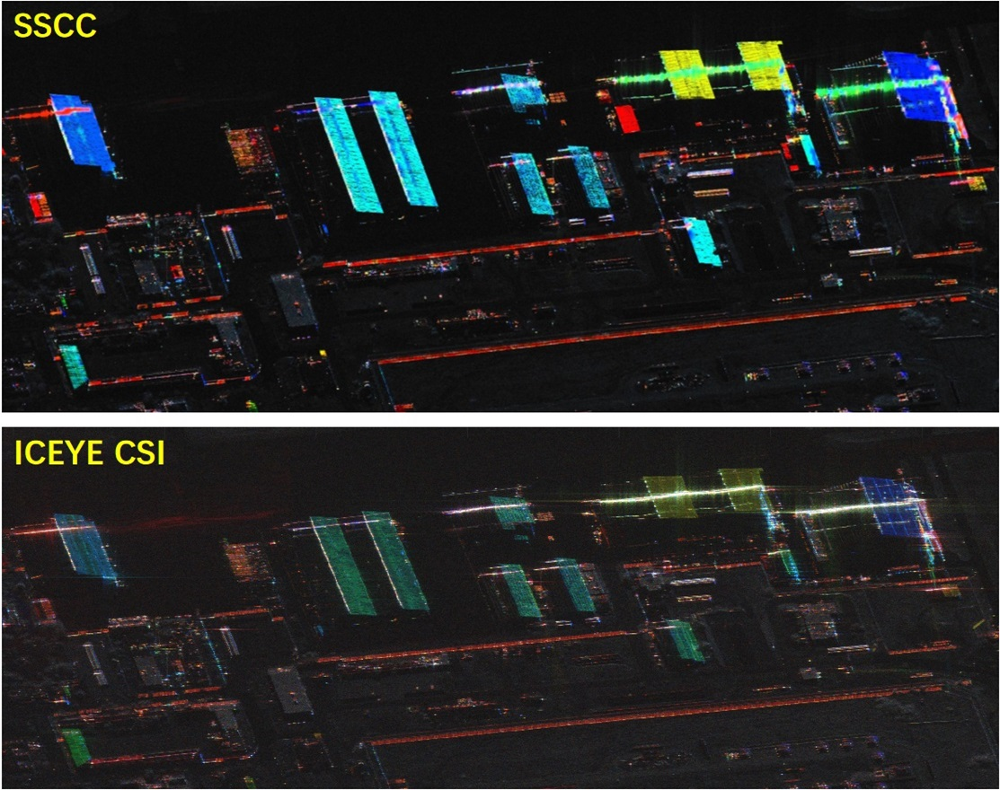
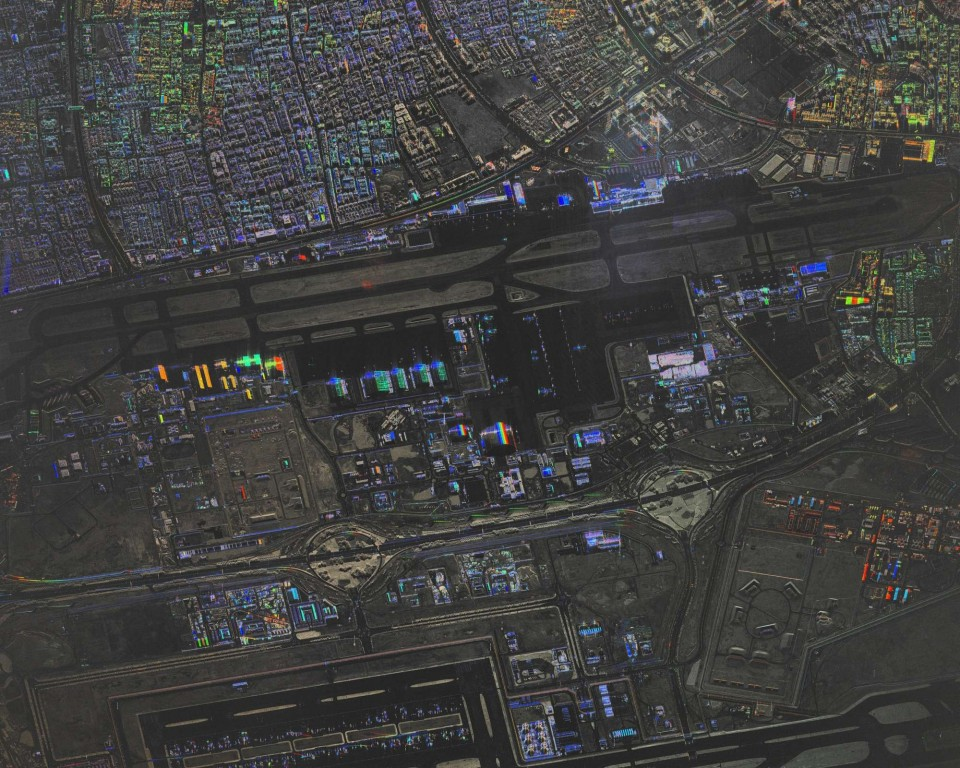